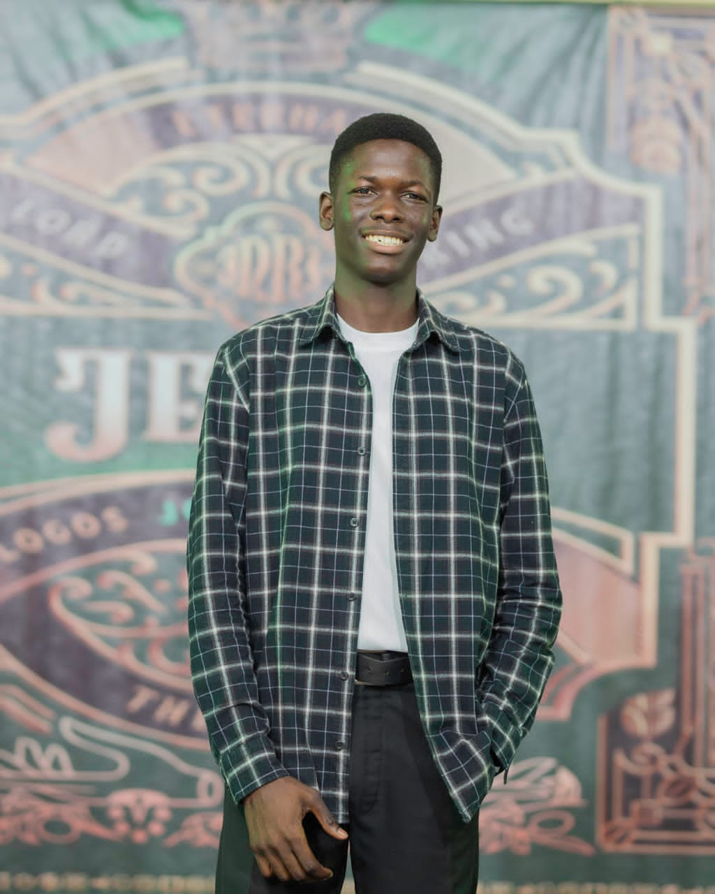

Hi — I'm Andy Delali
I'm a self-motivated front-end developer and entrepreneur. I love creating clean, user-friendly websites and learning new technologies to bring ideas to life. I also run Holykicks Collections; a clothing line that is dedicated in selling high quality sneakers, cargo pants, and jeans. I’m passionate about challenges that help me grow and make impacts innmu society and beyond.
See my workAbout me
I approach every project with curiosity and a focus on creating clean, user-friendly solutions. I enjoy experimenting with HTML, CSS, and JavaScript, and I’m exploring React to build more interactive web experiences. Running Holykicks Collections has sharpened my creativity and entrepreneurial skills. I’m always learning, taking on challenges, and aiming to craft websites and other projects that are not only functional but also engaging and accessible to all.